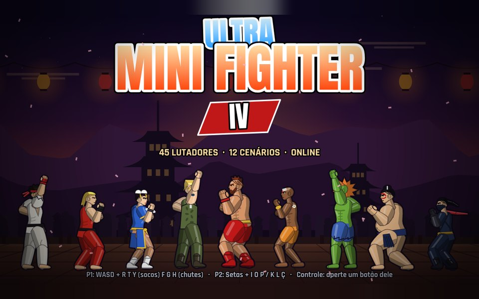

Ultra Mini Fighter IV: os buffs, nerfs e reworks de cada versão, do lançamento mais novo pro mais antigo.

O jogo base continua melhorando, e cada lutador tem a própria versão no formato X.Y.Z. O X é uma reformulação completa do lutador; Y e Z são ajustes menores dentro dela (balanceamento e correções).
Na seleção de personagem, depois de escolher um lutador, use ← → pra escolher entre a Base e as reformulações (1, 2…), e confirme. Cada reformulação já vem com os ajustes mais recentes dela. A mais nova já vem marcada, e é a que a CPU usa.
Online, cada jogador escolhe a versão do próprio lutador e os dois jogam com as mesmas escolhas. Os desafios de combo continuam usando a Base.